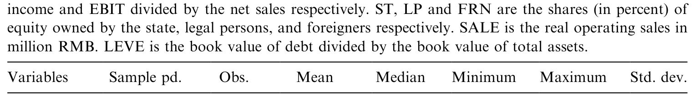
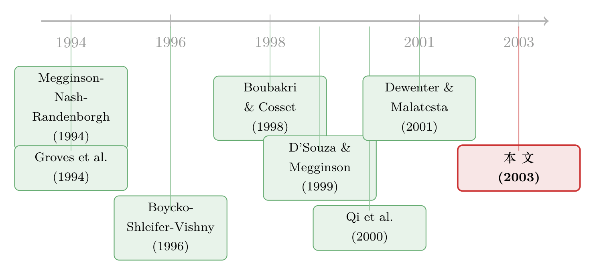

卖了一半的国企：当国家始终是那个「最大的股东」
本文读的是 Sun & Tong (2003, Journal of Financial Economics)：他们追踪了 1994–1998 年间在沪深两市「股份制上市」的 634 家国企，发现这场改革确实把销售、产出和工人生产率推了上去，却没能改善盈利回报，杠杆反而更高；更关键的是——国家持股越多，公司业绩越差；法人持股反而正向；而本该带来效率的外资持股，几乎不起作用。一句话：中国的国企私有化，是一场刻意没有卖干净的私有化，它的「成功」也因此只能是半截子的。
1 引言：花了几千亿，却舍不得「放手」
先说一组数字，感受一下这场改革的体量。
二十年改革，把国有企业（state-owned enterprises, SOEs）占 GDP 的比重从 77.6% 一路压到不足 30%。但代价同样惊人：1997 到 2000 短短三年，政府直接向国企注资 RMB 360 billion；一连串降息替它们省下融资成本约 RMB 260 billion；债转股 (debt-equity swap) 规模 RMB 112 billion；1996–1999 年间核销的坏账又有 RMB 150 billion。到 2000 年底，政府手里仍攥着相当于 GDP 17% 的上市公司股份，国有资产总值高达 RMB 9.88 trillion（约 US$1.19 trillion）。
钱砸下去，企业也确实「上市」了。可有一件事始终没变：国家从来没真正退场。 用作者的话说，到他们写作时为止，沪深两市里没有一家从国企脱胎而来的上市公司被完全私有化——哪怕是名义上。国家依然是绝大多数公司里那个最大的单一股东 (single block holder)。
于是一个绕不开的张力就摆在面前：一边是动辄千亿的真金白银和「三年脱困」的政治目标，一边是一场刻意只卖一半、把控制权牢牢留在政府手里的「改革」。这究竟算不算成功？如果算，成功到几分？这正是 Sun & Tong (2003) 这篇 JFE 想回答的问题——副标题写得很直白：the extent of its success，成功的「程度」。
2 一个绕不开的形容词：「部分」
要理解这篇论文，先得理解一个词：部分私有化 (partial privatization)。
中国走的从来不是市场经济国家那套「卖光走人」，也不是立陶宛、波兰、俄罗斯那种「全民发券」的大众私有化 (mass privatization)。官方用的词甚至不是「私有化」，而是「股份制」——只要国家还持有一部分股份，它在意识形态上就仍然「姓公」。这套「社会主义市场经济」的逻辑，决定了改革从一开始就给自己设了一道闸：国家必须保留相当比例的股权，尤其是那些中大型企业。
落到股权结构上，中国上市公司有五类股份，彼此泾渭分明：
- 国家股 (state shares)：由中央/地方政府或纯国有企业持有，平均占总股本
30%以上，且不可流通。 - 法人股 (legal-person shares)：由国内机构持有，这些机构本身多半也部分归政府所有；平均持股约
32%，有的超过60%，最高可达90%。同样不可流通，但经 CSRC 批准可在机构间转让。 - 职工股 (employee shares)：折价卖给员工，平均不足
2%，纯属激励，谈不上控制权。 - A 股：只卖给中国公民和境内机构，IPO 时要求不低于总股本的
25%，实际区间17%–33%。 - B 股 / 外资股 (foreign shares)：卖给境外投资者（B 股在境内以美元/港元计价，H 股在港交所上市）。整体平均不到
2.5%，但在真正发行外资股的公司里平均约35%。
看出问题了吗？国家股加上「半官方」的法人股，常常就把六成以上的股权锁死了。A 股投资者持股零散，前十大股东里就算挤进个把散户，持股也常在 0.5% 以下；外资股则小到「无足轻重」。换句话说，这是一家「上了市」、却几乎不存在能有效监督管理层的独立大股东的公司。
法人股是这篇论文最微妙的角色。它本质上是「别的国企」持有的股份——很多法人股东就是当初把上市公司「切」出来的母体 SOE，或是通过债转股进来的债权人。它和国家股像，因为很多法人也受国家控制；又不像，因为它往往只在一两家公司里当大股东，盯得更紧、利益绑得更死。这条裂缝，后面会成为全文最有意思的反转。
3 怎么给「成功」打分：识别策略
那么，怎么量化「私有化成功了几分」？
作者沿用了私有化文献里一套成熟的做法——Megginson, Nash & Randenborgh (1994) 开创、后来被 Boubakri & Cosset (1998)、D'Souza & Megginson (1999)、Dewenter & Malatesta (2001) 反复使用的前后对比法 (pre- vs. post-privatization comparison)：把每家公司在股份化（SIP）之前三年和之后的经营指标摆在一起，看它在私有化这个事件前后有没有系统性改善，再用秩检验和比例检验判断改善是否显著。
衡量「业绩」的指标也是这套文献的标准组合，大致分几类：
- 盈利能力：销售净利率、资产回报率 (ROA)、净资产回报率 (ROE) 等回报率指标；
- 经营效率 / 产出：实际销售额 (real sales)、人均销售（工人生产率）；
- 就业：员工人数；
- 杠杆：总负债 / 总资产。
这一步回答的是「平均而言，私有化前后变好了没有」。但它有个先天短板：它只能告诉你「变了」，没法告诉你「为什么变」「是谁让它变好或变坏」。
于是，真正关键的一步在于第二段分析：把上面的业绩指标，对各类股东的持股比例做横截面 / 合并回归 (pooled regression)。国家股占比、法人股占比、外资股占比——谁的系数为正，谁的为负，就揭示了这场「混合所有制」里，不同股东到底扮演了什么治理角色。这才是这篇论文区别于一般「私有化提升业绩」研究的地方：它利用了中国独一无二的所有制混合 (ownership mix)，把不同股东的影响拆开来量。
这里要诚实地说一句：这套设计是经营业绩的事件研究 + 横截面回归，不是 DiD、IV 或 RDD 那种以外生冲击为核心的因果识别。能上市的本来就是「相对优质」的国企（only relatively strong SOEs were eligible to go public），股权结构也并非随机分配。所以下文的「影响」更接近相关性证据下的方向性结论，识别上的隐忧我会留到最后再算账。
4 数据：634 家公司，与那本「三角债」的旧账
样本是 1994–1998 年间完成股份化的 634 家国企，分布在 1990 年底成立的上海证券交易所（SHSE）和 1991 年成立的深圳证券交易所（SZSE）。到 2000 年底，两市约有 1,080 家上市公司，几乎清一色是former SOEs。
要理解这些公司「带病上市」的底色，得看一眼它们身上背的债。所谓三角债 (triangular debt)——大量国企互相欠钱——把 SOE 的平均总负债率推到了 67.9%（1994 年）。1994 年有 27.6% 的国企负债超过总资产，另有 21.5% 负债等于权益；国企吃掉了全国 70%–80% 的银行信贷，给金融体系留下据估计高达 US$200 billion 的坏账。这正是后文「杠杆不降反升」结果的现实注脚：一家公司的负债积重难返，上一次市远不足以把它卸下来。
下面这张表给出了进入合并回归的各个变量的描述性统计，可以直观看到国家股、法人股、外资股三者悬殊的量级。

Table 10: presents the summary statistics of the pooled regression variables
5 主要结果：一半的成功，一半的失败
先说总账。这场改革，是一份「分裂」的成绩单。
私有化之后，国企在经营层面确实变好了：盈利能力 (earnings ability)、实际销售额、工人生产率三项都出现了改善的迹象。这与 Megginson et al. (1994) 在全球样本里看到的「私有化普遍提升业绩」是一致的方向。
但真正反常的是另一半：衡量盈利回报率的两项指标（如 ROS / ROE 一类）并没有改善；而杠杆——按理说私有化、引入股权资本之后应该下降——却不降反升。作者据此给出全文的总判断：China's privatization has achieved some success on balance, but the success is limited when compared with privatization programs in other countries。销售和生产率上去了，可投资者最关心的回报率和财务健康，并没有跟上。这就是「成功的程度」之所以打了折扣。
接着，一个自然的问题是：为什么只成功了一半？答案藏在所有制混合里。横截面回归给出了三个清晰的方向：
- 国家股占比越高，私有化后业绩越差——国家持股对公司业绩有显著的负向影响。这把「部分私有化」的局限性钉死了：正因为国家舍不得放手，业绩才上不去。
- 法人股占比越高，盈利能力越好——法人持股对公司业绩有正向影响。这印证了前面埋下的伏笔：法人虽然名义上也常归国家所有，但它行为方式不同于中央政府，更像市场经济里那种会主动监督管理层、提名董事、关心公司死活的大股东（Xu & Wang, 1997；Qi et al., 2000 也有类似发现）。
- 外资股的影响，出人意料地弱——foreign ownership does not show uniformly strong, positive impacts。这是全篇最反直觉的一个结果。
6 真正的反转：外资为什么「没派上用场」
按照所有教科书的逻辑，外资才应该是效率的引擎——它带来资本、技术、治理和市场纪律。可数据偏偏说：在中国的 SIP 公司里，外资持股对业绩没有那种「整齐、强烈、正向」的拉动。
为什么？作者的解释，正好把全文的逻辑收口到了「部分私有化」这一个核心上：
因为国家股占得太多，外资就只能分到「小而无力」的一块。
逻辑链是这样的：国家既要保留控制权，又要把一部分股权卖给 A 股散户（IPO 至少 25%），留给外资的空间本就被挤得很小——平均不到 2.5%，且外资大股东寥寥无几。一个持股零散、无人能进入前十大股东、没法提名董事的外部投资者，纵有满腹治理本事，也无从施展。更何况，真正想进入中国的外国资本，未必走二级市场买 B 股这条路，它们更可能选择直接投资 (FDI) 或与 SOE 合资。于是，国家持股太多 → 外资持股被挤压到无足轻重 → 外资的治理作用无从发挥。外资的「无用」，不是外资本身没用，而是这场私有化的结构性安排让它没机会有用。
这个机制非常值得和近年的跨国证据对照着看：外资到底是「掠夺者」还是「长期建设者」，本身就是一桩公案（关于这一点，可参见《外资真是「蝗虫」吗？——一次跨 30 国的长期投资体检》）。而 Sun & Tong 提供了一个更微妙的版本：外资的影响力，首先取决于它被允许持有多少、能不能进得了决策圈。同样地，国家「不护短」时大股东如何自己扮演治理角色，也是私有化文献的经典命题（参见《国家不护短的地方，大股东自己当「保镖」》）。
由此，全文的政策含义也就顺理成章：国家股应当从当前水平继续往下减，把更多股份卖给独立的外部机构投资者——无论中外。作者写作时，CSRC 恰好刚提出在 A 股市场减持国家股和法人股的计划，但遭到保守派与本地投资者的激烈反对。论文的「时效性」，正在于它给这场尚未尘埃落定的争论提供了一份证据。
7 文献脉络：从「卖光」到「卖一半」
把这篇论文放回它所属的那条研究河流里，脉络会清晰很多。
源头是私有化的理论与跨国实证。Boycko, Shleifer & Vishny (1994, 1996) 从政治经济学角度建立了私有化的理论；而真正奠定实证范式的，是 Megginson, Nash & Randenborgh (1994)——他们用「前后对比」的方法，在全球样本里证明了私有化普遍改善业绩。Boubakri & Cosset (1998) 把这套方法搬到发展中国家，D'Souza & Megginson (1999) 续到 1990 年代，Dewenter & Malatesta (2001) 则强力支持了「政府企业盈利能力更差」这一命题。
第二条支流是转型经济的私有化经验：Pohl et al. (1997) 看东欧，Frydman et al. (1996)、Barberis et al. (1996) 看俄罗斯，Hingorani et al. (1997) 看捷克斯洛伐克，Dyck (1997) 看东德。它们大多研究「大众私有化」，而这恰恰是中国没有走的路。
第三条支流是法与金融、所有权与治理：Shleifer & Vishny (1997) 的公司治理综述，La Porta et al. (1998, 1999, 2000) 关于法律保护与所有权结构的系列工作，正是 Sun & Tong 把视角对准「所有制混合」的理论动机。
最后是中国本土的零散证据，且结论彼此矛盾：Groves et al. (1994)、Cornelli & Li (1997) 认为 1980 年代的激励改革已显著提升生产率；Lin et al. (1998) 则认为改革远不成功；Xu & Wang (1997) 甚至讥讽中国私有化「不过是个 logo」「新瓶装旧酒」。Xu & Wang (1997)、Qi et al. (2000)、Chen (1998)、Tian (1999) 围绕国家股、法人股的治理角色各执一词。
Sun & Tong (2003) 站的位置，就是把上述三条线拧到一起：用 Megginson 范式的前后对比量「成功的程度」，用 La Porta 式的所有权视角拆「不同股东的角色」，并第一次在一个足够大的中国样本（634 家）上，系统地回答了这个对一个「太重要而不能被忽略」的经济体而言迟到已久的问题。

评论与延伸（Q&A + 研究方向）
(a) 几个可能的疑问
Q：销售和生产率上去了，盈利回报率却没改善——这到底算不算「成功」？
这正是全文标题里「extent（程度）」二字的分量所在。从产出和效率看，SIP 是有效的；但投资者真正关心的回报率没改善、杠杆还更高。作者的判断是「balance 上算有点成功，但与他国相比有限」。换句话说，它改善了「做事的能力」，没改善「赚钱的能力」和「财务的健康」——而后两者，恰恰被居高不下的国家股和卸不掉的旧债拖住了。
Q：法人股很多本身也归国家所有，凭什么说它「不同于国家」？
关键在监督的「聚焦度」和利益的「绑定度」。代表国家的通常是国资管理部门的某个分支，它同时在很多公司里持股，分身乏术；而一个法人股东往往只在一两家公司里当大股东，且很多就是把上市公司切出来的母体或债转股进来的债权人——公司好坏直接关系它的钱袋子。所以它有动机、也有能力去提名董事、盯紧管理层。论文里 FAW Jinbei Automotive 的例子很典型：1996 年它有
7.6%国家股，却有63.6%法人股，由中国第一汽车集团（51%）等持有。
Q：外资「没用」，会不会只是因为样本里发外资股的公司太少、噪声太大？
这确实是一个合理的担心。整体平均外资持股不到
2.5%，只有约八分之一的公司发了 B 股。但作者的解释不是「统计上测不准」，而是「经济上没空间」：持股被挤压到无足轻重、几乎没有外资大股东、外资进中国更偏好 FDI 与合资。这是一个关于结构性安排的解释，而非纯粹的样本量问题——当然，两者并不互斥。
Q：能上市的本来就是「相对优质」的国企，这会不会让结果失真？
会，而且这是本文识别上最大的软肋。样本是经过筛选的「优等生」，前后对比里看到的改善，可能部分来自上市前的择优，而非私有化本身。横截面回归里国家股的负向系数也可能反向因果：是不是业绩差的公司，政府反而舍不得卖、留下了更多国家股？这类内生性，文章用的是相关性框架，没能彻底切干净。
Q：杠杆为什么会「不降反升」？这不反常吗？
放在中国的语境里其实不奇怪。SOE 背着积重难返的三角债，1994 年平均负债率就有
67.9%，近三成公司资不抵债。一次股份制上市筹到的那点股权资本，相对于这座债务大山只是杯水车薪；加上中国会计里财务费用在营业利润之前扣除、企业有少报利润的动机，靠一次 IPO 把杠杆压下去本就不现实。
Q：这篇 2003 年的论文，对今天还有意义吗？
它的具体数字早已过时，但它提出的核心命题至今未解：当控制权与现金流权被刻意分离、国家长期不退场时，私有化的红利会被锁住多少？ 这个问题在今天的混合所有制改革、国企「市值管理」乃至中国信用市场的「隐性担保」里都有回声（参见《「刚兑」是原罪，还是次优解？——重读中国影子银行里的隐性担保》）。
(b) 几个可能的研究问题与提案
1. 把「国家股减持」做成一次准自然实验。 【经济故事】本文是相关性证据，但 2001 年起 CSRC 的国家股减持计划、后来的股权分置改革，提供了一连串外生的制度冲击。如果国家股真的拖累业绩，那么在减持冲击更大的公司里，业绩应当改善更明显。【可行性】高。数据可得（CSMAR / Wind 的股权结构与财务面板），识别上可用股改进度的批次差异做交错 DiD——但要当心交错处理效应下的符号陷阱（参见《当「更稳健」的设计悄悄把符号弄反了——重读交错双重差分》）。
2. 法人股东的「身份」决定治理质量吗？ 【经济故事】本文把法人股当成一个整体，但法人股东其实千差万别：有产业链上的母体 SOE、有债转股进来的资产管理公司、有地方政府平台。不同身份的法人，监督动机和能力应当不同。【可行性】中。难点在于手工识别法人股东身份并分类，需要逐家爬招股书 / 年报的前十大股东信息；识别上可比较「业务关联型」与「财务投资型」法人的业绩差异。
3. 外资进得来时，治理才有用——用 QFII/沪深港通做检验。 【经济故事】本文说外资「没用」是因为「进不去」。那么当 2002 年 QFII、2014 年沪深港通逐步打开外资通道、外资持股上限提高之后，外资的治理作用是否随之显现？【可行性】高。可投资度（investability）的分阶段放开是经典的识别来源（这类「可投资度」设计可参见《外资能买的股票，为什么更「抖」？》），数据完整、断点清晰。
4. 「卸不掉的债」与私有化红利：信用市场视角。 【经济故事】本文发现杠杆不降反升。一个自然的延伸是：那些上市时债务包袱更重的国企，私有化的经营改善是否被债务积压 (debt overhang) 吃掉？这把私有化文献和公司债/信用市场接上了。【可行性】中。需要把上市国企的银行贷款与债券融资数据拼起来，识别上可用 IPO 前负债率的横截面差异，但要处理「优质企业先上市」的选择问题。
5. 法人股 vs 国家股：谁在「掏空」，谁在「建设」？ 【经济故事】法人股正向、国家股负向，但两者都可能通过关联交易转移利益。到底哪一类股东在创造价值、哪一类在侵占小股东？【可行性】中。可借鉴用大宗股权交易价差度量控制权私利 / 掏空的结构化方法（参见《拍卖桌上量出来的「掏空」：当法律缺席，大股东能拿走一家公司的几成？》），但中国早期数据的可得性是主要约束。
我的判断
贡献。 这篇论文最大的价值，是在一个「太重要而不能被忽略、却长期缺乏系统研究」的经济体上，第一次用足够大的样本（634 家）、足够规范的方法（Megginson 范式），把「中国式私有化成功了几分」这个问题量化地摆上了台面。而它真正的洞见不在「私有化提升业绩」这种已被反复验证的结论，而在于把所有制混合拆开来看，发现了国家股负向、法人股正向、外资意外失灵这组层次分明的事实——尤其是「法人不同于国家」和「外资因被挤压而失效」这两点，至今仍是理解中国公司治理的关键拼图。
对识别的担忧。 必须坦白，这是一篇相关性论文，不是因果论文。上市企业的事前择优、国家股占比与业绩之间可能的反向因果、横截面回归里遗漏的行业与时间因素，都让「影响」二字打了折扣。文章用前后对比和合并回归得到的方向性结论是可信的、与理论一致的，但要把它读成「减持国家股就会改善业绩」的因果命题，则证据还不够硬。
后续想看到什么。 我最想看到的，是有人接着用股权分置改革、QFII/沪深港通这些真正外生的制度冲击，把本文的相关性结论重新做一遍因果识别——尤其是验证那个最迷人的反转：当外资终于「进得去」决策圈时，它的治理作用会不会如本文暗示的那样、从「无足轻重」变成「举足轻重」。如果会，那它将反过来证明：当年外资的「无用」，从来不是外资的错，而是那场刻意没有卖干净的私有化，亲手把它关在了门外。
参考文献
Boubakri, N., Cosset, J. (1998). The financial and operating performance of newly privatized firms: evidence from developing countries. Journal of Finance 53, 1081–1110.
Boycko, M., Shleifer, A., Vishny, R.W. (1994). Voucher privatisation. Journal of Financial Economics 35, 249–266.
Boycko, M., Shleifer, A., Vishny, R.W. (1996). A theory of privatisation. Economic Journal 106, 309–319.
Che, J., Qian, Y. (1998). Insecure property rights and government ownership of firms. Quarterly Journal of Economics 113, 467–496.
Chen, Y. (1998). Ownership structure and corporate performance: some Chinese evidence. Unpublished working paper, San Francisco State University.
Dewenter, K., Malatesta, P.H. (2001). State-owned and privately owned firms: an empirical analysis of profitability, leverage, and labor intensity. American Economic Review 91, 320–334.
D'Souza, J., Megginson, W.L. (1999). The financial and operating performance of newly privatized firms in the 1990s. Journal of Finance 54, 1397–1438.
Groves, T., Hong, Y., McMillan, J., Naughton, B. (1994). Autonomy and incentives in Chinese state enterprises. Quarterly Journal of Economics 109, 183–211.
Jin, H., Qian, Y. (1998). Public versus private ownership of firms: evidence from rural China. Quarterly Journal of Economics 113, 773–808.
La Porta, R., Lopez-de-Silanes, F., Shleifer, A., Vishny, R. (1998). Law and finance. Journal of Political Economy 106, 1113–1155.
Lin, J., Cai, F., Li, Z. (1998). Competition, policy burdens, and state-owned enterprise reform. American Economic Review 88, 422–427.
Megginson, W.L., Nash, R.C., Randenborgh, M.V. (1994). The financial and operating performance of newly privatized firms: an international empirical analysis. Journal of Finance 49, 403–452.
Megginson, W.L., Netter, J.M. (2001). From state to market: a survey of empirical studies on privatization. Journal of Economic Literature 39, 321–389.
Perotti, E.C. (1995). Credible privatization. American Economic Review 85, 847–859.
Qi, D., Wu, W.Y., Zhang, H. (2000). Ownership structure and corporate performance of partially privatized Chinese SOE firms. Pacific-Basin Finance Journal 8, 587–610.
Shleifer, A., Vishny, R. (1997). A survey of corporate governance. Journal of Finance 52, 737–783.
Sun, Q., Tong, W.H.S. (2003). China share issue privatization: the extent of its success. Journal of Financial Economics 70(2), 183–222.
Tian, G.L. (1999). Performance of mixed enterprises, state shareholding and agency cost. Unpublished working paper, London Business School.
Xu, X., Wang, Y. (1997). Ownership structure, corporate governance, and corporate performance: the case of Chinese stock companies. Working paper.